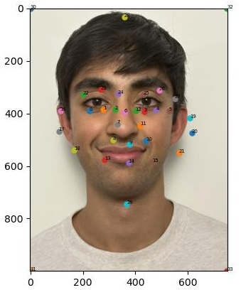
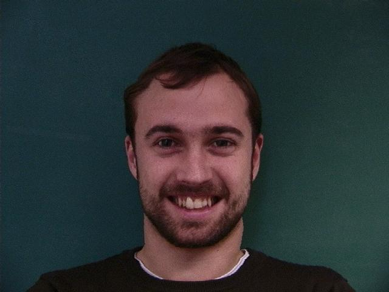

Project 3: Face Morphing
Part 1: Defining Correspondences
I used `plt.ginput` to select corresponding points on both faces. In
total, 30 corresponding points were selected -- 3 for each eye, 7 for the
nose, 3 for the mouth, 3 for each ear, 3 for each brow, and 2 for the top
and bottom of the head. I also automatically added the 4 corners of both
images as corresponding points.
|
Original image of Moe,
resized to 750 x 1000
|
Original image of Kanav
resized to 750 x 1000
|
Image of Moe with
Moe's annotated facial keypoints
|
Image of Kanav with
Kanav's annotated facial keypoints
|
I then averaged the two sets of facial keypoints to get the average shape
of Moe and Kanav. (This was an unweighted average i.e., the weights were
each 0.5). I used the `Delaunay` function from scipy to compute a Delaunay
triangulation from this average shape, and then I applied the Delaunay
triangulation to the images of Moe and Kanav and their facial keypoints.
|
Image of Moe with
Moe's average annotated facial keypoints
|

Image of Kanav with
Kanav's averaged annotated facial
keypoints
|
Image of Moe with
triangulation from average keypoints
|
Image of Kanav with
triangulation from average keypoints
|
Part 2: Computing the "Mid-way Face"
For each pair of corresponding triangles in the image of Moe and the
midway image, I computed an affine transformation from the corners of the
Moe triangle to the midway triangle. (Before computing this affine
transformation, I converted the coordinates of the triangle corners to
homogenous coordinates.) Once this affine transformation was computed, I
used the inverse of the affine transformation to map pixels within the
triangle in the midway image (computed using the `polygon` function) to
pixels in Moe's image. I used a simple interpolation (rounding down these
pixels in Moe's image to an integer) to extract the corresponding colors
from Moe's image. By repeating for all pixels in each triangle and for all
triangles, I was able to assemble Moe morphed into the midway geometry. I
repeated this entire process for the image of Kanav as well.
|
Original image of Moe,
resized to 750 x 1000
|
Original image of Kanav
resized to 750 x 1000
|
Image of Moe morphed
into the midway geometry
|
Image of Kanav morphed
into the midway geometry
|
Afterwards, I applied a cross-dissolve with the weights as 0.5 for both
the morphed Moe and morphed Kanav images from above. This gave me the
final midway face:
|
Original image of Moe,
resized to 750 x 1000
|
Original image of Kanav
resized to 750 x 1000
|
Image of midway face between Moe and Kanav.
Computed by
cross-dissolving.
|
Part 3: The Morph Sequence
I generalized the previous logic for the midway face to allow for any
`warp_frac` and `dissolve_frac` where `warp_frac` and `dissolve_frac` are
parameters between 0 and 1 that control how much warping and
cross-dissolving, respectively, is weighted to one image. (Computing the
mid-way face involves a both `warp_frac` and `dissolve_frac` of 0.5.)
Using this, I was then able to create a morph sequence of 45 frames where
`warp_frac` and `dissolve_frac` go from 0 to 1 in 45 equally-spaced
intervals (i.e., 0/44, 1/44, 2/44, ..., 43/44, 1).

GIF showing 45 frames of the morph sequence
from Moe to Kanav
images
Part 4: The Mean Face of a Population
I chose the Danes dataset. Below is an example of a face from the Danes
image, along with the corresponding keypoints. I averaged the keypoints
across all faces, and below I also provide an example of the same face
with the average keypoints. I repeated the process for both neutral
expression and happy expression faces. (Note: for my analysis, I excluded
the 2nd, 3rd, and 4th Danish faces since they were in grayscale. This left
me with 30 male and 7 female faces, each with neutral and happy expression
images.)
|
First neutral face within the Danes dataset,
annotated with its 58 keypoints
|
First happy face within the Danes dataset,
annotated with its 58 keypoints
|
First neutral face within the Danes dataset,
annotated with the average keypoints
|
First happy face within the Danes dataset,
annotated with the average keypoints
|
Afterwards, I warped each face within the Danes dataset to the average
geometry of the corresponding expression (neutral or happy). From these
warped faces, I averaged them together to compute the average neutral or
happy Danish face.
|
First neutral face (male) within the Danes dataset,
warped to the average geometry of neutral faces
|
Second neutral face (male) within the Danes dataset,
warped to the average geometry of neutral faces
|
Fifth neutral face (female) within the Danes dataset,
warped to the average geometry of neutral faces
|
Average Danish neutral face
|
|
First happy face (male) within the Danes dataset,
warped to the average geometry of happy faces
|
Second happy face (male) within the Danes dataset,
warped to the average geometry of happy faces
|
Fifth happy face (female) within the Danes dataset,
warped to the average geometry of happy faces
|
Average Danish happy face
|
I also repeated the above process, subsetting to males and subsetting to
female faces. Here is a summary of the results:
|
First male neutral face within the Danes dataset,
warped to the average geometry of male neutral faces
|

Second male neutral face within the Danes dataset,
warped to the average geometry of male neutral faces
|
Third male neutral face within the Danes dataset,
warped to the average geometry of male neutral faces
|
Average Danish male neutral face
|
|
First male happy face within the Danes dataset,
warped to the average geometry of male happy faces
|
Second male happy face within the Danes dataset,
warped to the average geometry of male happy faces
|

Third male happy face within the Danes dataset,
warped to the average geometry of male happy faces
|
Average Danish male happy face
|

First female neutral face within the Danes dataset,
warped to the average geometry of female neutral faces
|
Second female neutral face within the Danes dataset,
warped to the average geometry of female neutral faces
|
Third female neutral face within the Danes dataset,
warped to the average geometry of female neutral faces
|
Average Danish female neutral face
|
|
First female happy face within the Danes dataset,
warped to the average geometry of female happy faces
|
Second female happy face within the Danes dataset,
warped to the average geometry of female happy faces
|
Third female happy face within the Danes dataset,
warped to the average geometry of female happy faces
|
Average Danish female happy face
|
I then warped my face into the average geometry of Danish neutral males and warped the average Danish neutral male face into my geometry. I selected a similar set of 30 keypoints as described in Part 1 for both my face and the average Danish neutral male face and computed the Delaunay triangulation from the average of these keypoints. (Note: I cropped and resized my picture and the average Danish male picture to match dimensions.)
|
Average Danish neutral male face (cropped and resized)
|
Kanav's face (cropped and resized)
|
Average Danish neutral male face warped into Kanav's geometry
|
Kanav's face warped into the average Danish neutral male face geometry
|
Part 5: Caricatures
I extrapolated from the Danish neutral male population mean. Specifically, I computed a weighted average according to alpha * kanav + (1-alpha) * Danish neutral male population mean, and I set alpha to >1 in order to extrapolate in the direction of Kanav's face.
|
Original Kanav's face
|
Caricature with alpha = 1.5
|
Caricature with alpha = 2
|
Caricature with alpha = 2.5
|
Bells and Whistles
For my bells and whistles, I looked at improving the morphing algorithm by changing the rate of morphing (credit: Max on course staff for inspiration). Specifically, I looked at nonlinear functions to control how `warp_frac` and `dissolve_frac` change. I tried a sigmoid function to decrease the time spent in those awkward middle frames, and as comparison, tried a piecewise function that would instead increase the time spent in those awkward middle frames.
|
Using the original linear function that maps `warp_frac` and `dissolve_frac`
to 45 evenly spaced numbers in [0, 1].
|

Using a sigmoid function that maps `warp_frac` and `dissolve_frac`
to between sigmoid(-6) and sigmoid(6).
The ends were automatically transformed to 0 and 1.
|

Using a piecewise function that grows `warp_frac` and `dissolve_frac`
from 0 to 0.4 over the first third, 0.4 to 0.6 over the next third, and then 0.6 to 1.
|